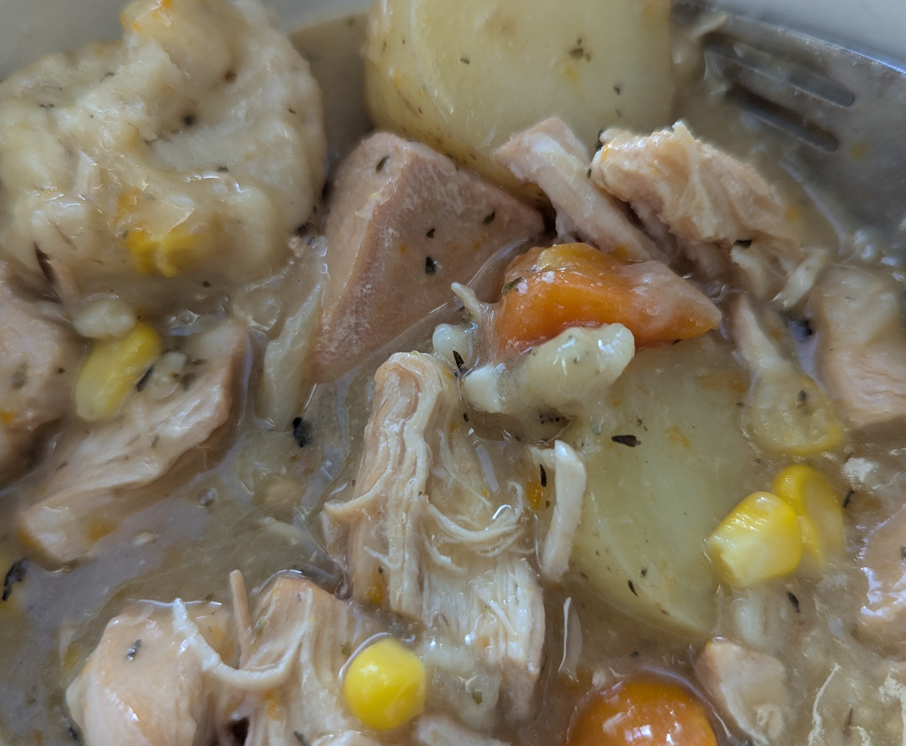

Slow Cooker Chicken Stew
 Source
Source Meat
Meat
Savoury chicken stew - easy comfort food

For the stew
2 tbspolive oil600gchicken thigh or breast3 tbspplain flour1 tspdried thyme1 tspdried rosemary1/2 tspsalt6cloves garlic1onion3carrots500gpotatoes700mlchicken stock1 cupfrozen sweetcorn- black pepper, to season
Dice potatoes, carrots, onion and chicken into large chunks. Mince the garlic.
In a large frying pan, heat the olive oil, add the chicken, and cook for 4-5 minutes until browned on all sides.
Once the chicken is seared, place it in the slow cooker, add flour, thyme, rosemary, and salt, and stir until the chicken is well coated in the flour and herbs.
Fry the onion, carrot and garlic in the same pan until they have a little colour. Then add into the slow cooker with the chicken. Deglaze the pan with a little stock to get all the flavour and pour over the top.
Pour over the stock and stir to combine.
Cover and cook on low for 7-8 hours or on high for 3-4 hours.
About an hour before the end add the sweetcorn and break up the chicken pieces a little to add some texture.
For the dumplings
125g or 1 cupplain flour, plus extra for dusting1 tspbaking powderpinchsalt60g or½cupsuetapprox½cupwater, to make a dough
Sift the flour, baking powder and salt into a bowl.
Add the suet and enough water to form a thick dough.
With floured hands, roll spoonfuls of the dough into small balls.
About an hour before the end remove the lid from the stew and place the dumplings on top.
Once complete, taste the stew and adjust the salt and pepper as needed before serving.
The stew can be served immediately, and leftovers can be stored in an airtight container in the fridge for up to 5 days or frozen for up to 3 months.